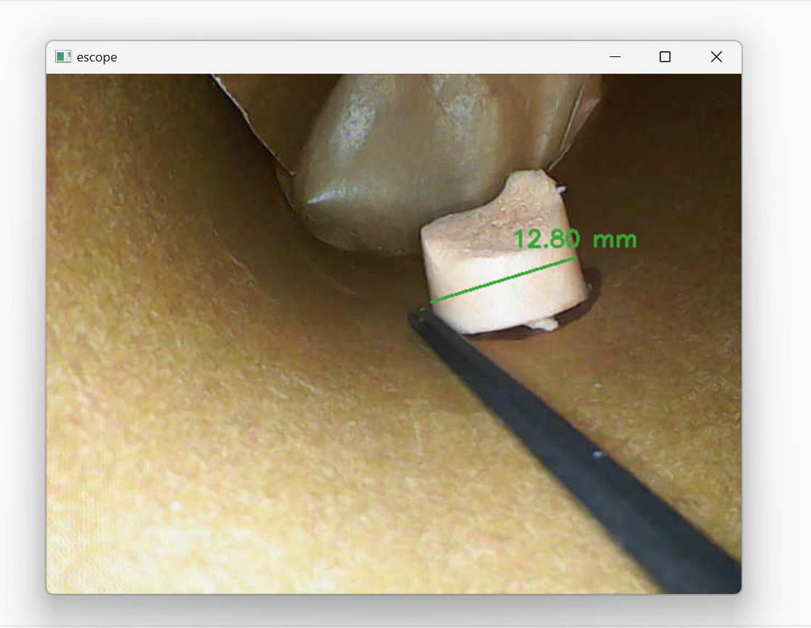

EScope -- Medical Device Design
Challenge
During an endoscopy, its difficult to accurately assess the size of objects in the camera's field of view. This is a significant issue as the size of an abnormal growth influence the plan to address it. As part of a Yale-National Institute of Health fellowship during the summer of 2024, I invented an algorithm and designed a software tool that lets the doctor measure object size mid-surgery. Its currently being tested by doctors in the Yale-New Haven health system. Unfortunately due to patent reasons, I can't share any more details of how it works.
Spring 2025 update! Excited for this software to be selected for funding by the Yale Rothberg Build Fund.